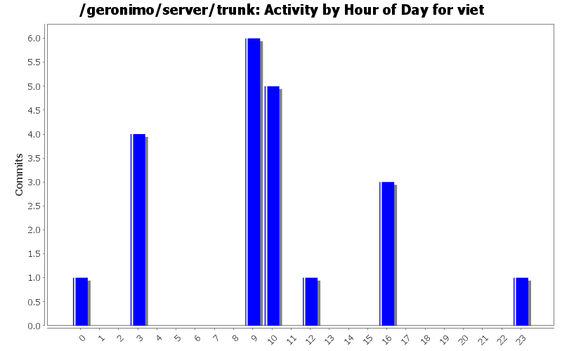
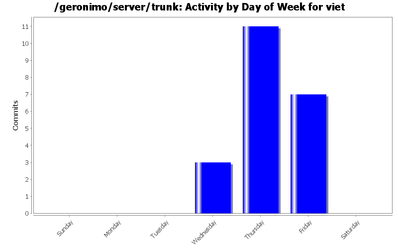
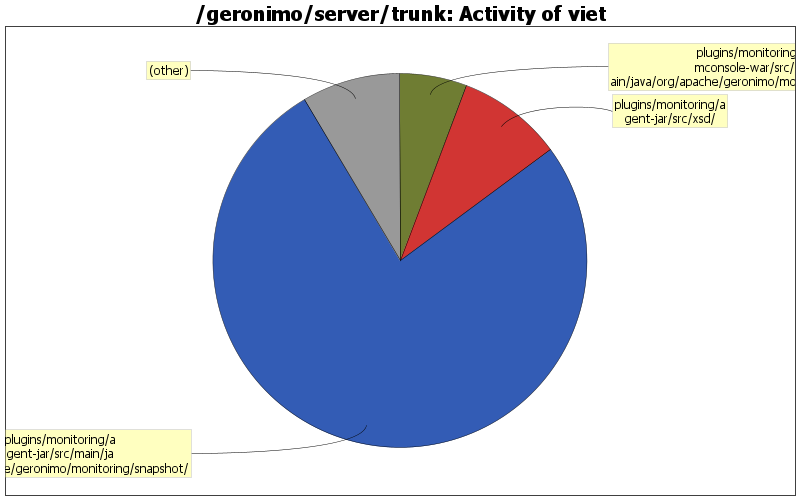

| Directory | Changes | Lines of Code | Lines per Change |
|---|---|---|---|
| Totals | 21 (100.0%) | 483 (100.0%) | 23.0 |
| plugins/monitoring/agent-jar/src/main/java/org/apache/geronimo/monitoring/snapshot/ | 6 (28.6%) | 370 (76.6%) | 61.6 |
| plugins/monitoring/agent-jar/src/xsd/ | 1 (4.8%) | 44 (9.1%) | 44.0 |
| plugins/monitoring/mconsole-war/src/main/java/org/apache/geronimo/monitoring/console/ | 3 (14.3%) | 28 (5.8%) | 9.3 |
| plugins/monitoring/agent-jar/src/main/java/org/apache/geronimo/monitoring/ | 1 (4.8%) | 18 (3.7%) | 18.0 |
| plugins/monitoring/agent-jar/ | 2 (9.5%) | 13 (2.7%) | 6.5 |
| plugins/monitoring/agent-jmx/src/main/java/org/apache/geronimo/monitoring/ | 2 (9.5%) | 10 (2.1%) | 5.0 |
| plugins/monitoring/agent-ejb/src/main/java/org/apache/geronimo/monitoring/ | 6 (28.6%) | 0 (0.0%) | 0.0 |

Get rid of unneccessary annotations in MRC interfaces.
0 lines of code changed in 4 files:
Fix for Geronimo-3996. Ensure that there are no null rendered params.
6 lines of code changed in 1 file:
Fix for Geronimo-4018. Manually determine the classloader that ObjectFactory is in.
5 lines of code changed in 2 files:
Fix for geronimo-3774. Moves all hardcoded string and numerical constants to one file.
53 lines of code changed in 6 files:
removes explicit <version> from agent-jar pom.xml
1 lines of code changed in 1 file:
Fix for Geronimo-3925. Uses JAXB to manipulate XML.
396 lines of code changed in 5 files:
Fix for geronimo-3833. Filter the mbean name by using the mbean server instead of iterating through all mbean names to find the match.
1 lines of code changed in 1 file:
Fix for geronimo-3833. Dynamically fetching the mbean name instead of hardcoding it.
21 lines of code changed in 1 file: